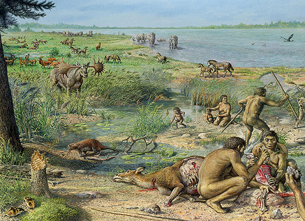

Senozoyik Zaman'ın son bölümü olan Kuvaterner (Dördüncü Zaman), yerküre tarihindeki en genç jeolojik dönemdir. İnsan (Homo) türlerinin ortaya çıkışı, dramatik iklim değişiklikleri ve periyodik buzul çağları ile tanımlanan bu dönem, yaklaşık 2.58 milyon yıl önce başlamış olup halen içinde bulunduğumuz Holosen devresiyle devam etmektedir.
Buzul Çağları ve İnsanlığın Yükselişi
Kuvaterner Dönemi, Milankoviç döngülerine bağlı gelişen iklimsel salınımlar ve biyolojik dönüşümlerle karakterize edilir:
• Pleistosen ve Holosen: Dönemin ilk devresi olan Pleistosen'de yüzden fazla sıcak ve soğuk devir yaşanmış; yaklaşık 11.700 yıl önce başlayan Holosen ise modern uygarlığın geliştiği güncel devir olmuştur.
• İnsan Evrimi: Modern insan yaklaşık 190.000 yıl önce bu dönem içinde gelişmiş; memeliler, çiçekli bitkiler ve böcekler karalara tamamen yayılmıştır.
• Buzullaşma ve Coğrafya: Buzulların periyodik olarak ±40° enlemlere kadar ilerlemesiyle deniz seviyeleri değişmiş; Bering Boğazı ve Manş Denizi gibi bölgelerde kıtalar arası kara köprüleri oluşmuştur.
• Büyük Memelilerin Yok Oluşu: Pleistosen sonunda mamut, mastodon, kılıç dişli kaplan ve gliptodon gibi dev memelilerin nesli küresel ölçekte tükenmiştir.
• Jeolojik Miras: Büyük Göller ve Hudson Körfezi gibi devasa yapılar, Kanada Kalkanı'nın son buzul çağından sonra kendini yeniden düzenlemesiyle oluşmuştur.
• Antroposen Teklifi: İnsanın endüstriyel etkilerini içeren ve yaklaşık 200 yıl önce başlayan yeni bir devir (Antroposen) kavramı günümüzde bilimsel olarak tartışılmaktadır.

Kuvaterner Dönemi'nin Pleistosen devresinde avcı-toplayıcı insan topluluklarını ve dev geyik (Megaloceros) gibi dönemin karakteristik megafaunasını temsil eden illüstrasyon.